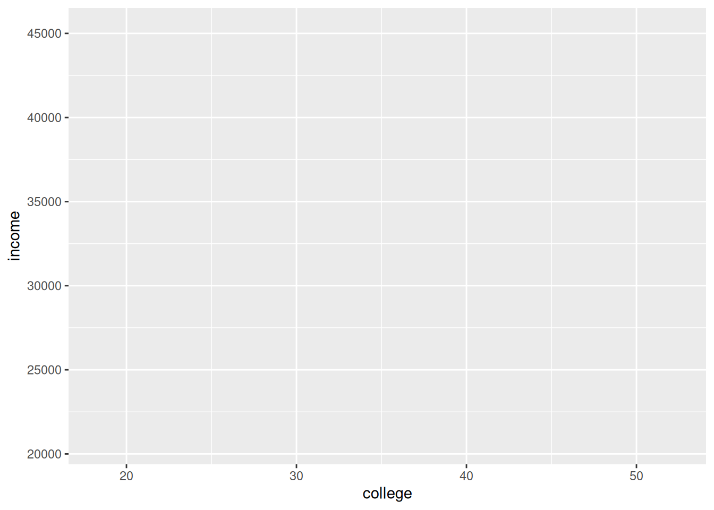
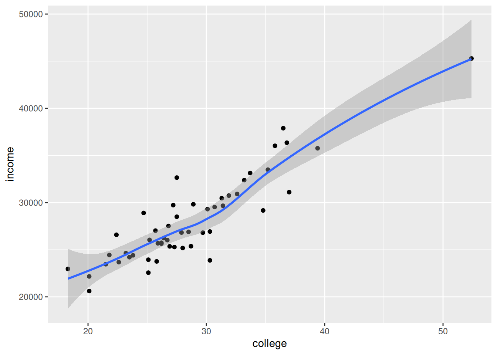
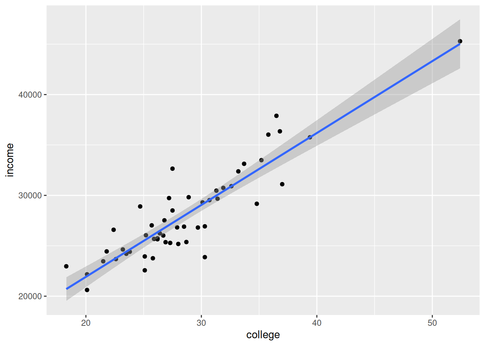
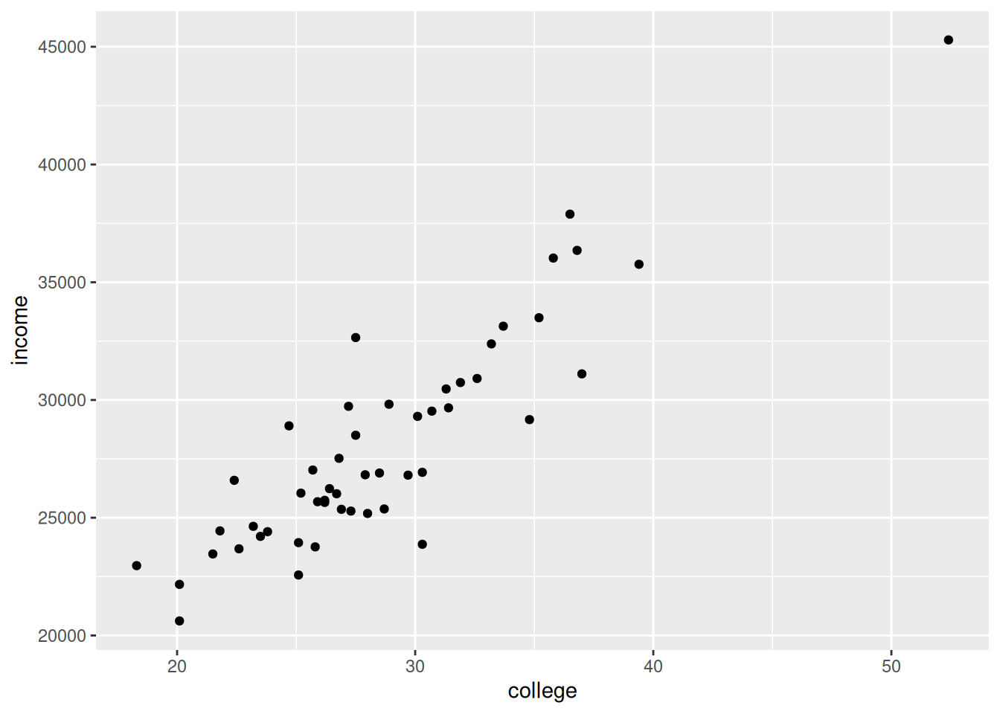
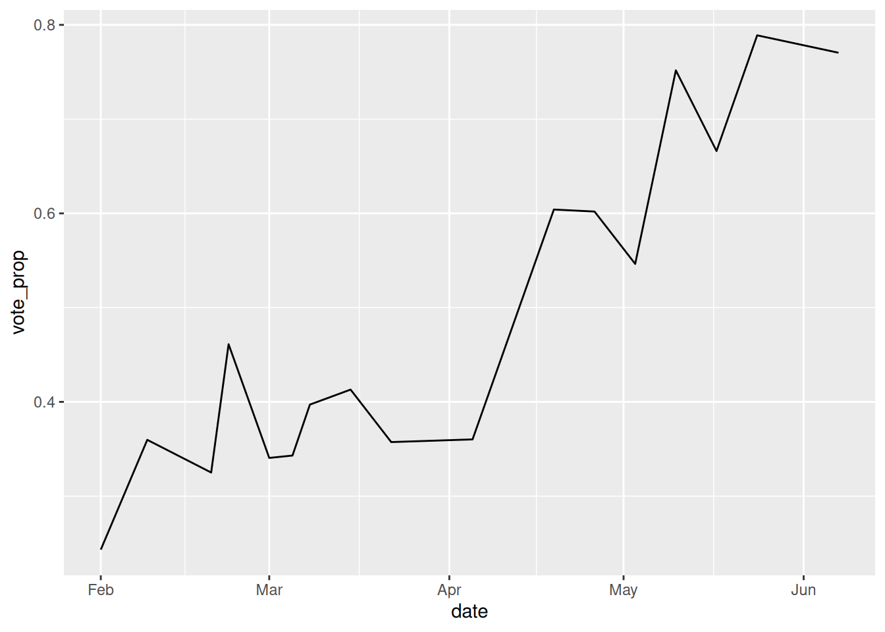
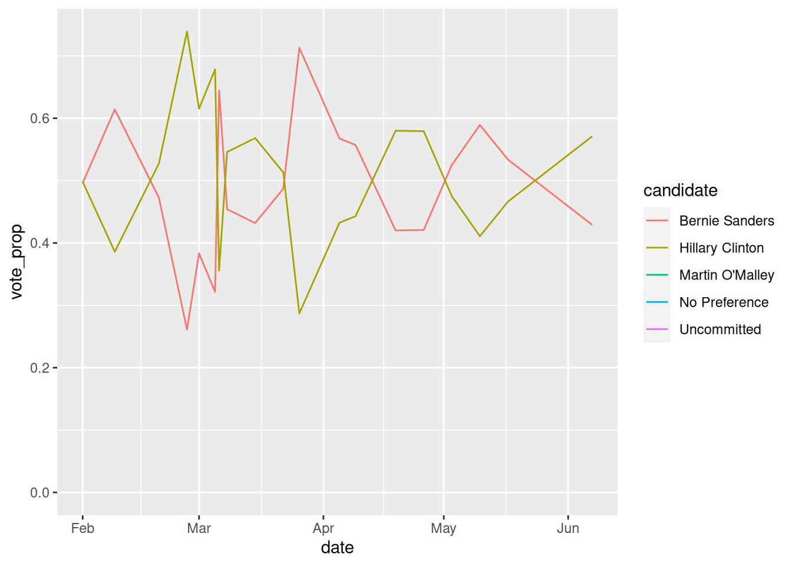
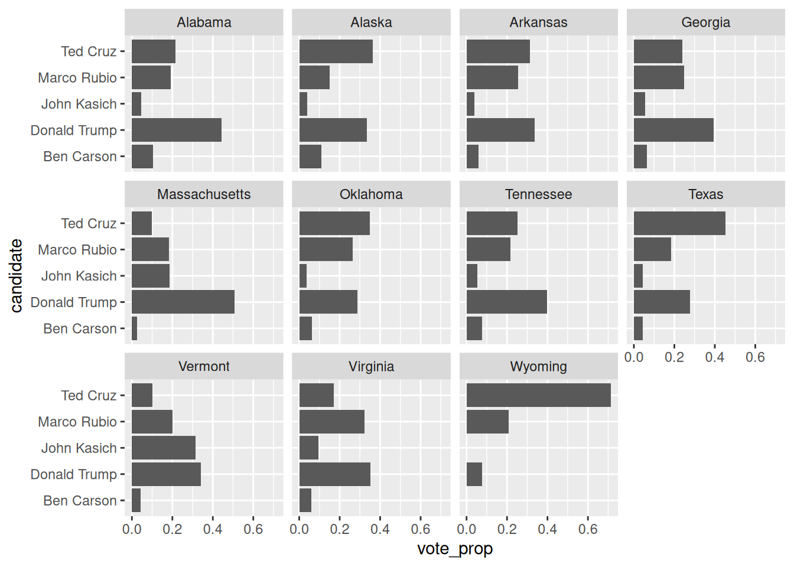
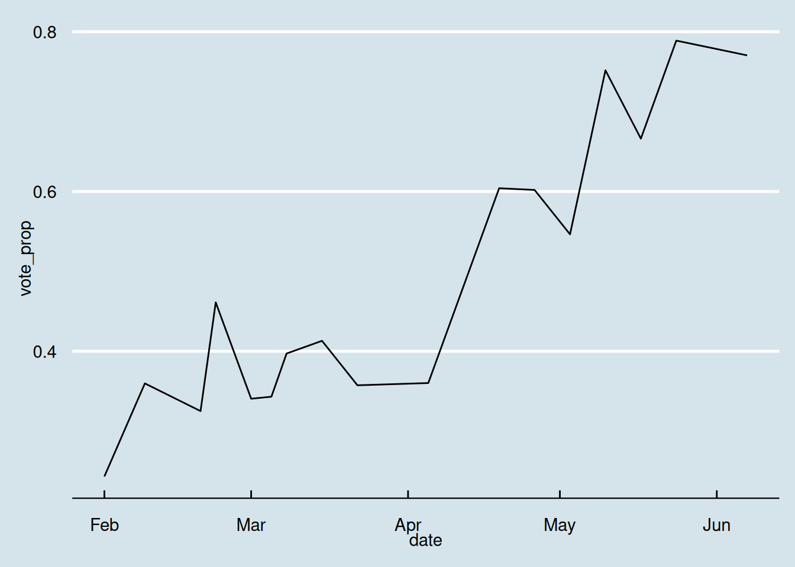
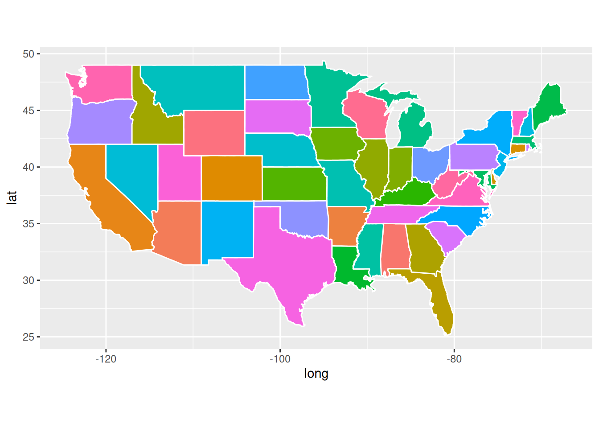

For many cool visualization examples using gplot2 (with R code included!) see the R Graph Gallery. For inspiration (but unfortunately no R code), there is also a 538 blog post on data visualization from 2016. Finally, see the article on ‘the grammar of graphics’ published by Hadley Wickham for more insight into the ideas behind ggplot.
A Basic ggplot plot
Suppose that we want to see the relation between college education and household income, both included in the county facts subset published by Houston Data Visualisation github page. Since this data set contains a large amount of columns, we keep only a subset of columns for now:
library(tidyverse)
── Attaching core tidyverse packages ──────────────────────── tidyverse 2.0.0 ──
✔ dplyr 1.1.4 ✔ readr 2.1.4
✔ forcats 1.0.0 ✔ stringr 1.5.1
✔ ggplot2 3.4.4 ✔ tibble 3.2.1
✔ lubridate 1.9.3 ✔ tidyr 1.3.1
✔ purrr 1.0.2
── Conflicts ────────────────────────────────────────── tidyverse_conflicts() ──
✖ dplyr::filter() masks stats::filter()
✖ dplyr::lag() masks stats::lag()
ℹ Use the conflicted package (<http://conflicted.r-lib.org/>) to force all conflicts to become errors
Rows: 3195 Columns: 54
── Column specification ────────────────────────────────────────────────────────
Delimiter: ","
chr (2): area_name, state_abbreviation
dbl (52): fips, Pop_2014_count, Pop_2010_base_count, Pop_change_pct, Pop_201...
ℹ Use `spec()` to retrieve the full column specification for this data.
ℹ Specify the column types or set `show_col_types = FALSE` to quiet this message.
Now, let’s make a scatter plot with percentage college-educated on the x-axis and median income on the y-axis. First, we can used the function ggplot to create an empty canvas tied to the dataset facts_state and tell the function which variables to use:
ggplot(data = facts_state, # which data set?aes(x=college, y=income)) # which variables as aesthetics?

Next, we need to tell ggplot what to plot. In this case, we want to produce a scatterplot. The function geom_point adds a layer of information to the canvas. In the language of ggplot, each layer has a geometrical representation, in this case “points”. In this case, the “x” and “y” are mapped to the college and income columns.
ggplot(data = facts_state,mapping =aes(x = college, y = income)) +geom_point() # adding the geometrical representation
So called aesthetic mappings, which map the visual elements of the geometry to columns of the data, can also be included as argument in the geom. This can be handy when several geoms are plotted and different aesthetics are used.
# same plot as aboveggplot(data = facts_state) +geom_point(mapping =aes(x = college, y = income))
The result is a plot where each point here represents a state, and we see a clear correlation between education level and income. There is one clear outlier on the top-right. Can you guess which state that is?
Due to the layer logic of ggplot, we can add more geoms to the plot (e.g., a regression line). Remember that if we provide aesthetics within the ggplot-function, these are passed to all geoms.
`geom_smooth()` using method = 'loess' and formula = 'y ~ x'

# Linear regression lineggplot(data = facts_state, mapping =aes(x = college, y = income)) +geom_point() +geom_smooth(method ="lm")
`geom_smooth()` using formula = 'y ~ x'

Important note on ggplot command syntax
For the plot to work, R needs to execute the whole ggplot call and all layers as a single statement. Practically, that means that if you combine a plot over multiple lines, the plus sign needs to be at the end of the line, so R knows more is coming. The general syntax is always:
ggplot(data = facts_state) +geom_point(mapping =aes(x = college, y = income))

But this is not:
ggplot(data = facts_state) +geom_point(mapping =aes(x = college, y = income))
Also note that the data and mapping arguments are the first arguments the functions expect, so you can also leave them out:
ggplot(facts_state) +geom_point(aes(x = college, y = income))
Other aesthetics
To find out which visual elements can be used in a layer, use e.g. ?geom_point. According to the help file, we can (among others) set the colour, alpha (transparency), and size of points. Let’s first set the size of points to the (log) population of each state, creating a bubble plot:
Since it is difficult to see overlapping points, let’s make all points somewhat transparent. Note: Since we want to set the alpha of all points to a single value, this is not a mapping (as it is not mapped to a column from the data frame), but a constant. These are set outside the mapping argument:
Instead of setting colour to a constant value, we can also let it vary with the data. For example, we can colour the states by percentage of population that is identified as ‘white’:
Finally, you can map to a categorical value as well. Let’s categorize states into whether population is growing (at least 1%) or stable or declining. We use the if_else(condition, iftrue, iffalse) function, which assigns the iftrue value if the condition is true, and iffalse otherwise:
As you can see in these examples, ggplot tries to be smart about the mapping you ask. It automatically sets the x and y ranges to the values in your data. It mapped the size such that there are small and large points, but not e.g. a point so large that it would dominate the graph. For the colour, for interval variables it created a colour scale, while for a categorical variable it automatically assigned a colour to each group.
Of course, each of those choices can be customized, and sometimes it makes a lot of sense to do so. For example, you might wish to use red for republicans and blue for democrats, if your audience is used to those colors; or you may wish to use grayscale for an old-fashioned paper publication. We’ll explore more options in a later tutorial, but for now let’s be happy that ggplot does a lot of work for us!
Bar plots
Another frequently used plot is the bar plot. By default, R bar plots assume that you want to plot a histogram, e.g. the number of occurences of each group. As a very simple example, the following plots the number of states that are growing or stable in population:
For a more interesting plot, let’s plot the votes per Republican candidate in the New Hampshire primary. First, we need to download the per-county data, summarize it per state, and filter to only get the NH results for the Republican party: (see the previous tutorials on Data Transformations and Joining data for more information if needed)
Rows: 24611 Columns: 8
── Column specification ────────────────────────────────────────────────────────
Delimiter: ","
chr (5): state, state_abbreviation, county, party, candidate
dbl (3): fips, votes, fraction_votes
ℹ Use `spec()` to retrieve the full column specification for this data.
ℹ Specify the column types or set `show_col_types = FALSE` to quiet this message.
`summarise()` has grouped output by 'state', 'party'. You can override using the `.groups` argument.
nh_gop <- results_state %>%filter(state =="New Hampshire"& party =="Republican")nh_gop
# A tibble: 8 × 4
# Groups: state, party [1]
state party candidate votes
<chr> <chr> <chr> <dbl>
1 New Hampshire Republican Ben Carson 6509
2 New Hampshire Republican Carly Fiorina 11706
3 New Hampshire Republican Chris Christie 21069
4 New Hampshire Republican Donald Trump 100406
5 New Hampshire Republican Jeb Bush 31310
6 New Hampshire Republican John Kasich 44909
7 New Hampshire Republican Marco Rubio 30032
8 New Hampshire Republican Ted Cruz 33189
Now, let’s make a bar plot with votes (y) per candidate (x). We use geom_col here, which means that we provide a y aesthetic rather than having ggplot calculate it from the frequencies. Equivalently, we could have users geom_bar(stat="identity") to create a bar plot with an ‘identity’ statistics.
Some options, like labels, legends, and the coordinate system are graph-wide rather than per layer. You add these options to the graph by adding extra functions to the call. For example, we can use coord_flip() to swap the x and y axes:
You can also reorder categories with the fct_reorder function, for example to sort by number of votes. Also, let’s add some colour (just because we can!):
(Note: this works because ggplot assumes all labels are factors, which have an ordering; you can use other functions from the forcats package (generally starting with fct_) to do other things such as reversing the order, manually specifying the order, etc).
This is getting somewhere, but the y-axis label is not very pretty and we don’t need guides for the fill mapping. This can be remedied by more graph-level options. Also, we can use a theme to alter the appearance of the graph, for example using the minimal theme:
We can also add groups to bar plots. For example, we can set the x category to state (taking only NH and IA to keep the plot readable), and then group by candidate:
By default, the groups are stacked. This can be controlled with the position parameter, which can be dodge (for grouped bars) or fill (stacking to 100%): (note that the position is a constant, not an aesthetic mapping, so it goes outside the aes argument)
Of course, you can also make the grouped bars add up to 100% by computing the proportion manually, which can give you a bit more control over the process.
Note that the example below pipes the preprocessing output directly into the ggplot command, that is, it doesn’t create a new temporary data set like gop2 above. This is entirely a stylistic choice, but can be useful for operations that are only intended for a single visualization.
Note that where group_by %>% summarize replaces the data frame by a summarization, group_by %>% mutate adds a column to the existing data frame, using the grouped values for e.g. sums. See our tutorial on Data Summarization for more details.
Line plots
Finally, another frequent graph is the line graph. For example, we can plot the ascendancy of Donald Trump by looking at his vote share over time. First, we combine the results per state with the primary schedule: (see the tutorial on Joining data)
# dataset 1: dates for each primaryurl2 <-"https://raw.githubusercontent.com/houstondatavis/data-jam-august-2016/master/csv/primary_schedule.csv"schedule <-read_csv(url2)
Rows: 113 Columns: 4
── Column specification ────────────────────────────────────────────────────────
Delimiter: ","
chr (4): date, state, party, type
ℹ Use `spec()` to retrieve the full column specification for this data.
ℹ Specify the column types or set `show_col_types = FALSE` to quiet this message.
Take a minute to inspect the code above, and try to understand what each line does! The best way to do this is to inspect the output of each line, and trace back how that output is computed based on the input data.
ggplot(trump) +geom_line(aes(x = date, y = vote_prop))

We can do the same for multiple candidates as well, for example for the democratic candidates:
`summarise()` has grouped output by 'date'. You can override using the
`.groups` argument.
ggplot(dems) +geom_line(aes(x = date, y = vote_prop, colour = candidate))

Bonus question: in the code for Trump, the proportion was calculated in two statements (first per state, then per date), but in this code it is calculated only per date. How does that matter? Is either calculation more correct than the other?
Multiple ‘faceted’ plots
Just to show off some of the possibilities of ggplot, let’s make a plot of all republican primary outcomes on Super Tuesday (March 1st):
super <- results_state %>%left_join(schedule) %>%filter(party =="Republican"& date =="2016-03-01") %>%group_by(state) %>%mutate(vote_prop = votes/sum(votes))
Joining with `by = join_by(state, party)`
ggplot(super) +geom_bar(aes(x = candidate, y = vote_prop), stat ='identity') +facet_wrap(~state, nrow =3) +coord_flip()

Note facet_wrap wraps around a single facet. You can also use ~facet_grid() to specify separate variables for rows and columns
Themes
Customization of things like background colour, grid colour etc. is handled by themes. ggplot has two built-in themes: theme_grey (default) and theme_bw (for a more minimal theme with white background). The package ggthemes has some more themes, including an ‘economist’ theme (based on the newspaper). To use a theme, simply add it to the plot:
library(ggthemes)ggplot(trump) +geom_line(aes(x = date, y = vote_prop)) +theme_economist()

You can also modify any of the theming elements yourself (check the help for theme() for more information):
ggplot(trump) +geom_line(aes(x = date, y = vote_prop)) +theme_economist() +theme(panel.grid.major.y =element_line(colour="lightblue"))
Geographic information can be plotted in ggplot much like scatter plots, simply using longitude and lattitude as x and y. Often, we want to plot data on an actual map of (part of) the world, for example to plot locations of tweets or colour a map with information per country or state.
In ggplot this is accomplished by plotting the shapes of the countries. The package includes shape data for the US, the world, and some countries like France, but unfortunately not EU or Germany. The maps originate from the maps package, so you can check their documentation to see what countries are included.
long lat group order region subregion
1 -87.46201 30.38968 1 1 alabama <NA>
2 -87.48493 30.37249 1 2 alabama <NA>
3 -87.52503 30.37249 1 3 alabama <NA>
4 -87.53076 30.33239 1 4 alabama <NA>
5 -87.57087 30.32665 1 5 alabama <NA>
6 -87.58806 30.32665 1 6 alabama <NA>
This basically tells ggplot what lines to draw to form a state. If a state is not contiguous it will contain subregions resulting in multiple polygons.
We can immediately plot this data, using the geom_polygon to plot shapes. We specify x and y as longitude and lattitude, fill by state, and make the state borders white.
ggplot(data = states) +geom_polygon(aes(x = long, y = lat, fill = region, group = group), color ="white") +coord_fixed(1.3) +guides(fill="none")

Note: the last line fixes the aspect ratio to 1.3 and prevents a per-state legend (guide) from being plotted.
This example coloured the states as a non-informative nominal variable. We can also colour by our own data, for example by percentage white ethnicity:
states <- facts_state %>%mutate(region=tolower(area_name)) %>%select(region, white) %>%inner_join(states)
Joining with `by = join_by(region)`
ggplot(data = states) +geom_polygon(aes(x = long, y = lat, fill = white, group = group), color ="white") +coord_fixed(1.3) +theme_void() +ggtitle("Percentage white population per state")